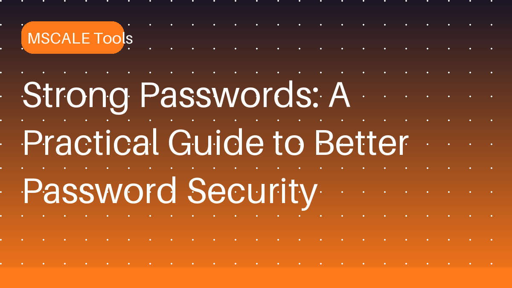

Strong Passwords: A Practical Guide to Better Password Security
Most account break-ins exploit weak and reused passwords, not clever hacks. A practical guide to password strength, entropy, managers and the habits that matter.

When an account gets broken into, the cause is usually not a dramatic hack. It is a password: short, reused, guessable, or all three. Studies of large breaches consistently show that the majority of compromised accounts fell to credential stuffing, where attackers take username and password pairs leaked from one service and try them everywhere else, betting correctly that people reuse passwords.
The good news is that the defence is unglamorous and effective: long, random, unique passwords, stored in a password manager, with two-factor authentication layered on top. This guide explains what actually makes a password strong, why the advice works, and how to put it into practice without making your digital life harder.
What makes a password strong
Length beats everything
Password strength against guessing is measured in entropy, counted in bits, and each bit doubles the number of guesses an attacker needs. The fastest way to add bits is to add characters. An eight-character password using every symbol on the keyboard has about 52 bits of entropy; a sixteen-character password of just lowercase letters has about 75. Length wins because every extra character multiplies the search space, while complexity only widens the pool once.
Randomness beats cleverness
Humans are terrible random generators. Substituting a for an at, adding a year to the end, capitalising the first letter: these tricks are so universal that cracking tools try them first, by the millions. A password's real entropy comes from unpredictability, not from looking complicated. That is why generated random passwords, or long random passphrases, outperform any human-invented pattern of the same length.
Uniqueness contains the damage
A perfect password reused on ten sites is ten chances to leak. When any one of those services is breached, the attackers hold the key to the other nine. Uniqueness does not make any single password stronger; it makes a breach stop at the border of the one compromised service instead of cascading through your life.
The password manager changes everything
The objection to unique random passwords has always been memory: nobody can remember fifty random strings. Password managers solve this completely. You remember one strong master passphrase; the manager generates, stores and fills unique passwords for everything else. Auto-fill also protects against phishing, because a manager will not fill your bank password into a site that merely looks like your bank.
Choosing one comes down to picking a reputable option, cloud-based or local, enabling a strong master passphrase of four or more unrelated words, and keeping a written backup of that passphrase somewhere physically secure. The transition weekend looks like this: install the manager, generate new passwords for your five most critical accounts, then upgrade others opportunistically as you log in over the following weeks.
Two-factor authentication closes the remaining gap
A password is something an attacker can steal: from a breached database, from malware, from a phishing page. Two-factor authentication adds a second, independent proof, usually a time-based code from an app or a hardware key, so a stolen password alone no longer opens the account. App-based codes defeat credential stuffing entirely; hardware security keys defeat phishing as well, because the key cryptographically verifies the real site.
Priority order matters. Enable two-factor first on email, because email is the recovery key to everything else; then on banking, then on the accounts whose loss would hurt most. This single habit, more than any password policy, is what converts a breach from a catastrophe into an inconvenience.
Practical habits that do the work
Security advice fails when it demands constant effort. These habits are one-time decisions that keep paying:
- Generate passwords rather than inventing them, with sixteen characters or more as the default.
- Store everything in a password manager and stop trying to remember individual passwords.
- Use a four-word passphrase for the manager itself, long enough to be strong and rhythmic enough to remember.
- Turn on two-factor authentication for email and banking first, then everything that offers it.
- Never reuse a password across accounts, at any strength.
- Check breach-notification services occasionally and change any password that appears in a leak.
Common questions, answered honestly
Do passwords need changing every ninety days? Modern guidance says no: forced rotation encourages weak variations of the same password. Change on evidence, when a breach affects you, and otherwise invest the effort in length and uniqueness. Are password managers safe? Reputable ones are audited, encrypt data so the provider cannot read it, and are overwhelmingly safer than the alternatives, which are reuse and notebooks. Is writing passwords down wrong? A written password in a locked drawer is stronger than a reused password in your head; the risk model is physical, and physical security is something most people already do well.
The deepest myth is that strong passwords are for people with something to hide. In reality, your accounts are infrastructure: email holds your recoveries, banking holds your money, and work accounts hold your livelihood. The attacker does not need to be interested in you specifically; automated systems try leaked credentials against millions of accounts indiscriminately, and weak passwords are how the machines pick their victims.
A fifteen-minute upgrade you can do today
The entire baseline takes one sitting. Install a password manager and set a strong master passphrase. Generate and replace the passwords on your email and banking accounts. Turn on two-factor authentication for both. That is fifteen minutes, and it moves you from the majority that can be breached by a leaked list to the minority whose accounts require an attacker to defeat a manager, a random password and a second factor at once. Few security upgrades offer a better return on fifteen minutes.
Password strategies compared
| Strategy | Typical entropy | Resistant to cracking? | Resistant to reuse leaks? |
|---|---|---|---|
| Short + symbols (P@ssw0rd!) | Low - predictable substitutions | No | No |
| Long lowercase random (16+) | High - ~75 bits | Yes | Only if unique |
| Manager-generated, unique per site | High - 80 to 100+ bits | Yes | Yes |
A strong password is long (16+ characters), random and unique to every account, stored in a password manager and protected by two-factor authentication. Length beats symbol tricks, randomness beats clever patterns, and uniqueness stops one breach from cascading into all of your accounts.
Frequently Asked Questions
How long should a password be?
Sixteen characters with mixed character sets is a strong default, and twenty or more for high-value accounts. Length contributes more to strength than any other single factor.
Are password managers really safe?
Reputable managers encrypt your vault so only your master passphrase unlocks it, and most are independently audited. The realistic alternative, reusing memorable passwords, is dramatically less safe.
Is a passphrase better than a random password?
Both work. A four-word random passphrase offers similar entropy to a random character password of moderate length and is easier to type; use passphrases where you must remember or speak the secret.
Do I need to change passwords regularly?
No, not on a schedule. Change them when a breach affects the service, when you suspect malware, or when upgrading from a weak or reused password.
What about security questions?
Treat their answers as passwords: random strings stored in your manager, not real facts, because the real facts about you are often publicly discoverable.
Is this browser password generator safe to use?
Yes, when it generates locally with a cryptographic random source and never transmits the result, which is how this site's generator works. Close the tab after copying your password.
Conclusion
Password security does not require cleverness, only a system. Let a manager generate long random secrets so you never invent them, make every account unique so breaches stop at the border, and switch on two-factor authentication everywhere it is offered. Run the fifteen-minute upgrade today - check your weakest accounts, replace the reused passwords first, and the most common form of account takeover stops applying to you.